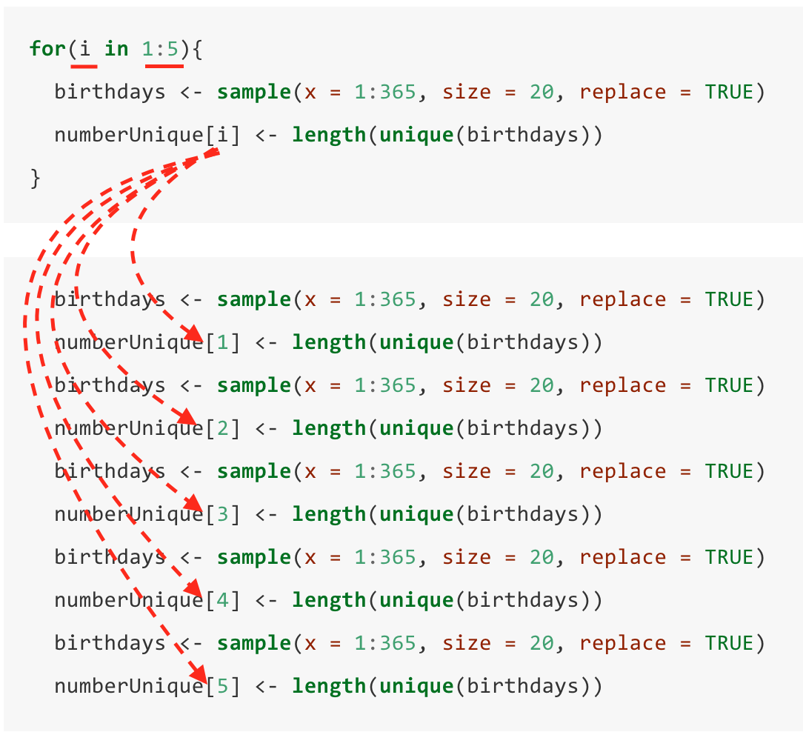

Section 10 Loops
In this section, we will use the Monte Carlo method to solve the birthday problem, introducing one more programming concept: the ‘for loop’.
10.1 Pre-assigning
We need to simulate lots of separate sets of 20 birthdays. To keep things simple and easy to visualise, we’ll first simulate five sets of 20 birthdays, then do more later.
We will simulate one set of 20 birthdays at a time, and record the number of unique birthdays. It can be helpful to ‘pre-assign’ a vector, so that we’ve got somewhere convenient to store the results as they come in.
We’ll make a vector called numberUnique, that initially just consists of five zeros. We can use the rep() command to replicate 0 five times:
numberUnique <- rep(0, times = 5)and to see what the result is:
numberUnique## [1] 0 0 0 0 0The zeros will all be replaced as we work through the simulation, so the values in numberUnique aren’t important right now: what matters is that we have a vector with five places, ready to store the results. (An analogy would be that this is a bit like, having been told we’re going to be given five books, we first clear an empty space for five books on a bookshelf. We’ve then got somewhere ready to put the books as we get them.)
10.2 ‘looping’ by hand
A slow and tedious way to do the five simulations would be as follows. We simulate the first set of 20 birthdays, count how many unique birthdays there are, and store the result in element 1 of numberUnique:
birthdays <- sample(x = 1:365, size = 20, replace = TRUE)
numberUnique[1] <- length(unique(birthdays))so that the first element of numberUnique has been updated:
numberUnique## [1] 19 0 0 0 0(We’ll have a quick look at birthdays, to see why the first element is 19)
sort(birthdays)## [1] 48 62 71 75 84 102 130 152 172 176 186 235 245 255 259 291 307 307 312
## [20] 365(There are 19 unique birthdays: two people had birthdays on day number 307.)
Then we simulate the second set of 20 birthdays, count how many unique birthdays there are, and store the result in element 2 of numberUnique:
birthdays <- sample(x = 1:365, size = 20, replace = TRUE)
numberUnique[2] <- length(unique(birthdays))Note that sample() produces a different result each time, so we’ll have different values in birthdays:
sort(birthdays)## [1] 54 65 76 80 126 126 150 152 180 197 203 246 288 300 303 304 315 316 320
## [20] 357Now the second element of numberUnique has been updated:
numberUnique## [1] 19 19 0 0 0and we keep going…
But to do lots of simulations, this would take ages!
Exercise 10.1 In a script file, first pre-assign numberUnique to be a vector of 5 zeros. Then copy these two lines into your script, pasting them five times:
birthdays <- sample(x = 1:365, size = 20, replace = TRUE)
numberUnique[1] <- length(unique(birthdays))Change the numbers in the square brackets [] as appropriate: your goal is to do five simulations, and replace the 5 zeros in numberUnique with the results from the five simulations. Run your script and look at the values in numberUnique, to see that your script has worked.
10.3 for loops
A more convenient way to tell R to do the five (or many more) simulations is to use what we call a for loop:
for(i in 1:5){
birthdays <- sample(x = 1:365, size = 20, replace = TRUE)
numberUnique[i] <- length(unique(birthdays))
}This is the same (but more concise) as writing out the following:
birthdays <- sample(x = 1:365, size = 20, replace = TRUE)
numberUnique[1] <- length(unique(birthdays))
birthdays <- sample(x = 1:365, size = 20, replace = TRUE)
numberUnique[2] <- length(unique(birthdays))
birthdays <- sample(x = 1:365, size = 20, replace = TRUE)
numberUnique[3] <- length(unique(birthdays))
birthdays <- sample(x = 1:365, size = 20, replace = TRUE)
numberUnique[4] <- length(unique(birthdays))
birthdays <- sample(x = 1:365, size = 20, replace = TRUE)
numberUnique[5] <- length(unique(birthdays))Comparing the two, we can see that in the for loop, the commands inside the brackets { } have been repeated five times, but with the value of i within [i] cycling through the integers 1, 2, 3, 4, 5. R will cycle i through these five values, because as the start of the for loop, we wrote i = 1:5, and 1:5 produces these five integers.

The ‘looping’ variable i can also be within calculations. Here’s a simple example. This loop will do four ‘iterations’, so we will first pre-assign a vector with four zeros to store the results:
results <- rep(0, times = 4)Then this for loop:
for(i in 1:4){
results[i] <- i ^ (i + 1)
}would be equivalent to writing out
results[1] <- 1 ^ (1 + 1)
results[2] <- 2 ^ (2 + 1)
results[3] <- 3 ^ (3 + 1)
results[4] <- 4 ^ (4 + 1)Exercise 10.2 Using for loops.
Modify the birthday problem for loop shown above to do 10 simulations rather than 5. Make sure you ‘pre-assign’
numberUniquefirst, to be a vector of 10 zeros. Inspect the results innumberUnique, after you have run your loop.First, copy and paste these commands into a script file, then run them and inspect
reciprocalsto see the result
reciprocals <- rep(0, 3)
reciprocals[1] <- 1 / 1
reciprocals[2] <- 1 / 2
reciprocals[3] <- 1 / 3Now write a for loop that produces the same result.
- All the calculations we’ve done using for loops can actually be done even more efficiently another way, but we won’t worry about this for now. for loops are really designed for problems when the results at one iteration will depend on results from previous iterations, as in the following example. Can you predict which famous sequence the following code would produce? Copy and paste the code into R to find out.
results <- rep(1, times = 10)
for(i in 3:10){
results[i] <- results[i-1] + results[i-2]
}(Why did we use i in 3:10 and not i in 1:10?)